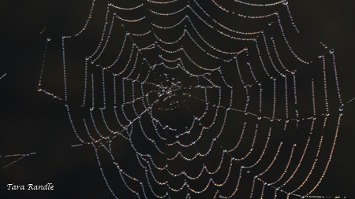

Class Introductions.
Hello Class!
My name is Tara Randle.
San Antonio is my hometown.
◊◊♥♥◊◊
😃
What makes San Antonio a great city?
One of the things is the mission walk in San Antonio. It is a great place to be able to walk, bicycle and enjoy other outdoor activities.
There are some great historic buildings with neat architecture on the mission reach of the River Walk.
Hobbies
One of my hobbies is photography.
Here is one of my pictures.
